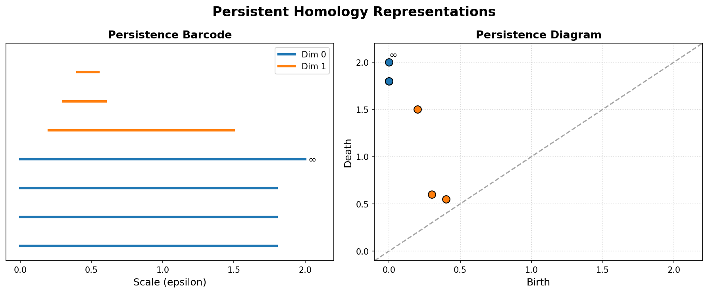

Topological Data Analysis (TDA) & Persistent Homology#
Topological Data Analysis (TDA) treats data points as a cloud from which we want to extract the underlying shape and connectivity.
1. Simplicial Complexes & Nerve Theorem#
To analyze a discrete set of data points topologically, we connect them using simplices (points, lines, triangles, tetrahedrons) to build a continuous geometric structure called a Simplicial Complex:
0-simplex: A point.
1-simplex: A line segment (connecting two points).
2-simplex: A filled triangle (connecting three points).
3-simplex: A solid tetrahedron (connecting four points).
To construct a simplicial complex from a dataset X in a metric space, we grow closed balls of radius \(\epsilon/2\) around each point \(x \in X\), denoted as \(B(x, \epsilon/2)\). There are three primary ways to build these complexes:
A. The Čech Complex (\(\check{C}_\epsilon(X)\))#
A simplex \(\sigma\) belongs to the Čech complex if the balls of radius \(\epsilon/2\) centered at its vertices have a non-empty global intersection:
The Nerve Theorem: The Nerve Theorem states that if the intersection of any subcollection of balls is contractible (which is true for convex balls in Euclidean space), then the Čech complex is homotopy equivalent (shares the same topological shape/holes) to the union of the balls.
Limitation: Finding whether a large set of balls has a common intersection is computationally very expensive for high-dimensional simplices.
B. The Vietoris–Rips Complex (\(VR_\epsilon(X)\))#
A simplex \(\sigma\) belongs to the Vietoris–Rips complex if the balls of radius \(\epsilon/2\) centered at its vertices intersect pairwise (which simply means the distance between any two vertices is \(\le \epsilon\)):
Pros & Cons: It is much easier to compute because we only need to check pairwise distances. However, it does not satisfy the Nerve Theorem and can introduce “ghost” topological features that do not exist in the union of the balls.
Interleaving Relationship: The Čech and Vietoris-Rips complexes approximate each other through the following squeeze/interleaving theorem:
C. The Alpha Complex (\(\alpha\)-complex)#
The Alpha complex is a subcomplex of the Delaunay triangulation. It restricts the balls \(B(x, \epsilon/2)\) to their respective Voronoi cells (the region of space closer to \(x\) than to any other point).
By intersecting each ball with its Voronoi cell, we get a much smaller simplicial complex that is still homotopy equivalent to the union of the balls (satisfying the Nerve Theorem) but is computationally much faster to construct in low dimensions.
2. Betti Numbers#
Betti numbers (\(\beta_k\)) are topological invariants that count the number of \(k\)-dimensional holes in a simplicial complex:
\(\beta_0\): The number of connected components.
\(\beta_1\): The number of 1D circular holes (like a loop or a circle).
\(\beta_2\): The number of 2D voids (like the empty space inside a hollow sphere or balloon).
3. Persistent Homology#
Instead of choosing a single radius \(\epsilon\), Persistent Homology computes the simplicial complexes for all values of \(\epsilon\) from \(0\) to \(\infty\). As \(\epsilon\) grows:
New simplices are born (connecting components).
New holes are born.
Existing holes are filled in and “die.”
We track the birth and death of topological features across different scales of \(\epsilon\) using:
Persistence Barcodes: Horizontal lines showing the lifespan of each hole (x-axis is \(\epsilon\)).
Persistence Diagrams: 2D scatter plots where the x-axis is the birth scale and the y-axis is the death scale.
{kind=link}

Long-lived features (bars that persist over a wide range of \(\epsilon\)) represent true topological structures of the data, while short-lived features represent noise.
A. Algebraic Foundations: Persistence Modules#
In mathematical TDA, a filtration of simplicial complexes yields a sequence of vector spaces connected by linear maps. This algebraic object is called a Persistence Module:
A persistence module \(V\) over \(\mathbb{R}\) (or \(\mathbb{Z}\)) is a collection of vector spaces \(\{V_t\}_{t \in \mathbb{R}}\) together with linear maps \(v_{s,t}: V_s \to V_t\) for all \(s \le t\), satisfying:
Identity: \(v_{t,t} = \text{id}_{V_t}\) for all \(t\).
Composition: \(v_{t,r} \circ v_{s,t} = v_{s,r}\) for all \(s \le t \le r\).
The Structure Theorem: If a persistence module is pointwise finite-dimensional (each \(V_t\) is finite-dimensional), it decomposes uniquely into a direct sum of interval modules \(I[b, d]\):
where an interval module \(I[b, d]\) represents a topological feature that is born at scale \(b\) and dies at scale \(d\). This algebraic decomposition is what justifies representing persistent homology as a barcode or persistence diagram.
B. The Persistence Algorithm & Matrix Reduction#
To compute persistent homology, we represent the boundary operators across all simplices in a single boundary matrix \(D\).
Let \(m\) be the total number of simplices in the filtration, sorted such that if simplex \(\sigma_i\) is a face of \(\sigma_j\), then \(i < j\). The boundary matrix \(D\) is an \(m \times m\) matrix where:
\(D[i, j] = 1\) if simplex \(\sigma_i\) is a codimensional-1 face of simplex \(\sigma_j\) (using \(\mathbb{Z}_2\) coefficients).
\(D[i, j] = 0\) otherwise.
Column Reduction Algorithm#
We reduce \(D\) to a column-echelon form \(R\) using column operations. For any column \(j\), let \(\text{low}(j)\) denote the index of the lowest row containing a \(1\). The algorithm is:
for j = 1 to m:
while there exists column k < j such that low(k) == low(j):
add column k to column j (modulo 2)
Pivots & Birth-Death Pairs: Once reduced, if \(\text{low}(j) = i\), it means the simplex \(\sigma_i\) gave birth to a topological hole, and simplex \(\sigma_j\) killed it. This gives a birth-death interval \([t_i, t_j]\) in the barcode. If column \(j\) is reduced to zero and is never a pivot, it represents a feature that never dies (its interval is \([t_j, \infty)\)).
The Clearing Optimization: To speed up computation, if a column \(i\) is identified as a lowest row index (\(\text{low}(j) = i\)), we immediately clear column \(i\) to zero (\(R[:, i] = 0\)). This is because any simplex that acts as a killer (boundary generator) cannot also give birth to a cycle in the same dimension, saving significant computation time.
C. Stability & The Isometry Theorem#
To guarantee that TDA is a reliable tool, we must be able to compare persistence modules and prove that they are robust to noise.
Interleaving Distance (\(d_I\)): Two persistence diagrams are compared by finding an algebraic alignment between their underlying persistence modules. We say two modules \(V\) and \(W\) are \(\delta\)-interleaved if there exist families of linear maps \(f_t: V_t \to W_{t+\delta}\) and \(g_t: W_t \to V_{t+\delta}\) that commute with the transition maps. The interleaving distance \(d_I(V, W)\) is the infimum of all such \(\delta\) for which an interleaving exists.
The Isometry Theorem: The Isometry Theorem (proven by Bjerkevik and others) states that the algebraic interleaving distance between two persistence modules is exactly equal to the geometric bottleneck distance between their persistence diagrams:
The Stability Inequality: This isometry underpins the stability of persistent homology. For any two continuous functions \(f, g\) on a space \(X\), the bottleneck distance between their respective persistence diagrams is bounded by their supremum distance:
D. Persistent Cohomology#
Cohomology is the algebraic dual of homology. Instead of study chains (sums of simplices), cohomology studies cochains (functions mapping simplices to coefficients, \(C^k(K) = \text{Hom}(C_k(K), \mathbb{Z}_2)\)), using the coboundary operator \(d_k: C^k(K) \to C^{k+1}(K)\).
Computational Advantage: While persistent homology and persistent cohomology yield the exact same barcodes (due to dualities on field coefficients), the persistent cohomology algorithm is mathematically dual and runs significantly faster.
Why it is faster: In cohomology, we build the filtration from the top down. The boundary matrix column reduction can be performed on the fly with much smaller active matrix sizes. This is why state-of-the-art TDA software (such as Ripser and GUDHI) defaults to computing persistent cohomology.
4. Python Example: Calculating Betti Numbers with GUDHI#
You can perform Topological Data Analysis in Python using the gudhi library:
# To run this example, install gudhi: pip install gudhi
import numpy as np
import gudhi as gd
# Generate points on a circle with some noise
theta = np.linspace(0, 2 * np.pi, 100)
x = np.cos(theta) + np.random.normal(0, 0.05, 100)
y = np.sin(theta) + np.random.normal(0, 0.05, 100)
points = np.vstack((x, y)).T
# Compute Vietoris-Rips complex
rip_complex = gd.RipsComplex(points=points, max_edge_length=2.0)
simplex_tree = rip_complex.create_simplex_tree(max_dimension=2)
# Compute persistence
persistence = simplex_tree.persistence()
# Print topological features: dimension, (birth, death)
for feature in persistence:
dim, (birth, death) = feature
# We look for features that persist (have a large lifespan)
if (death - birth) > 0.5:
print(f"Dimension {dim} hole born at {birth:.3f}, dies at {death:.3f} (Lifespan: {death - birth:.3f})")
Expected Output:
Dimension 0 hole born at 0.000, dies at inf (Lifespan: inf)
Dimension 1 hole born at 0.120, dies at 1.450 (Lifespan: 1.330)
The infinite dimension 0 hole shows that all points eventually merge into a single connected component.
The dimension 1 hole (large lifespan) indicates the loop structure of the circle we generated.